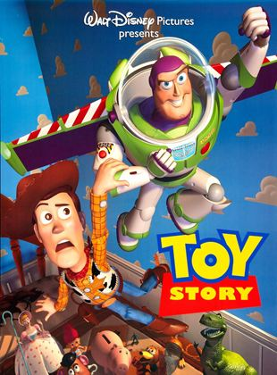
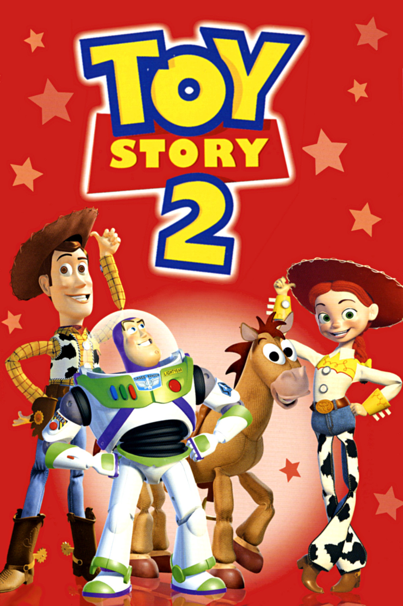
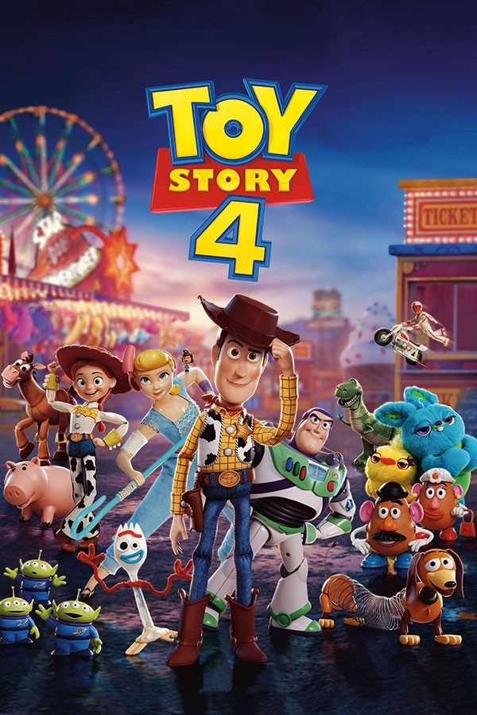
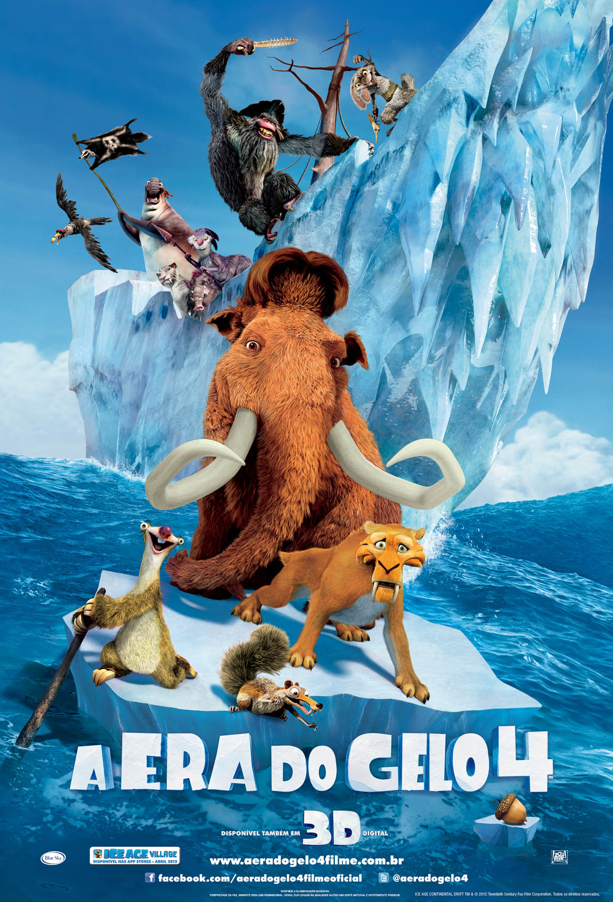
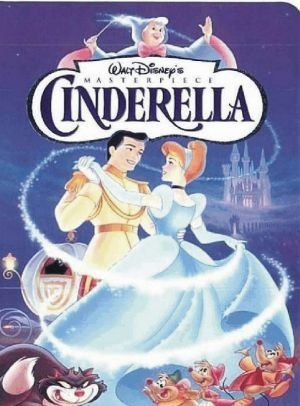
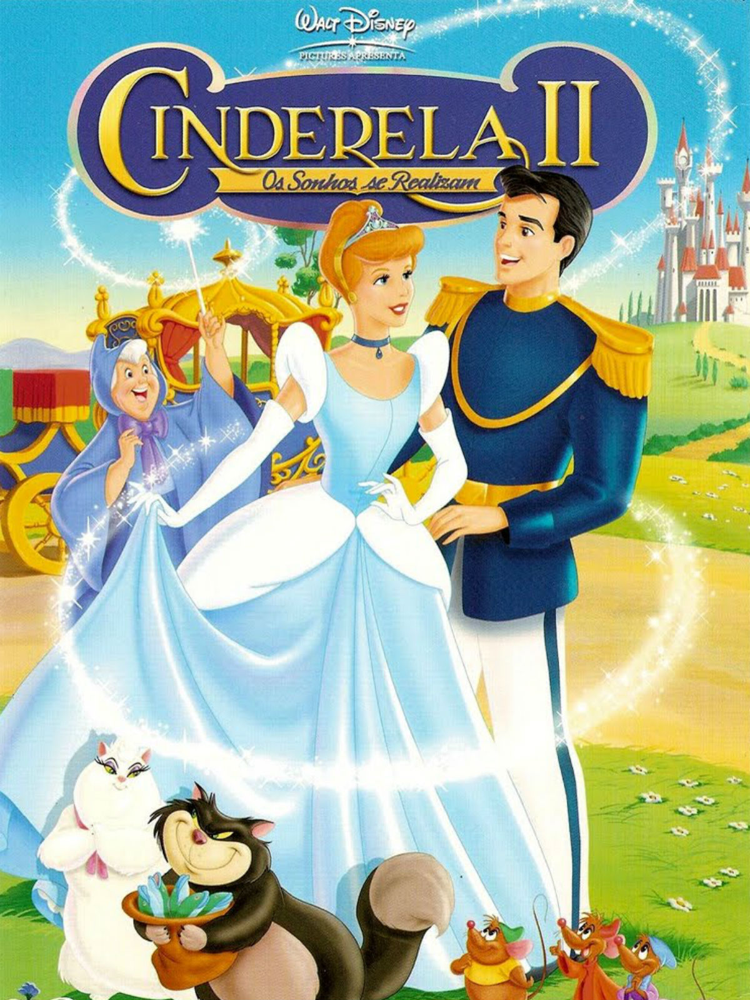
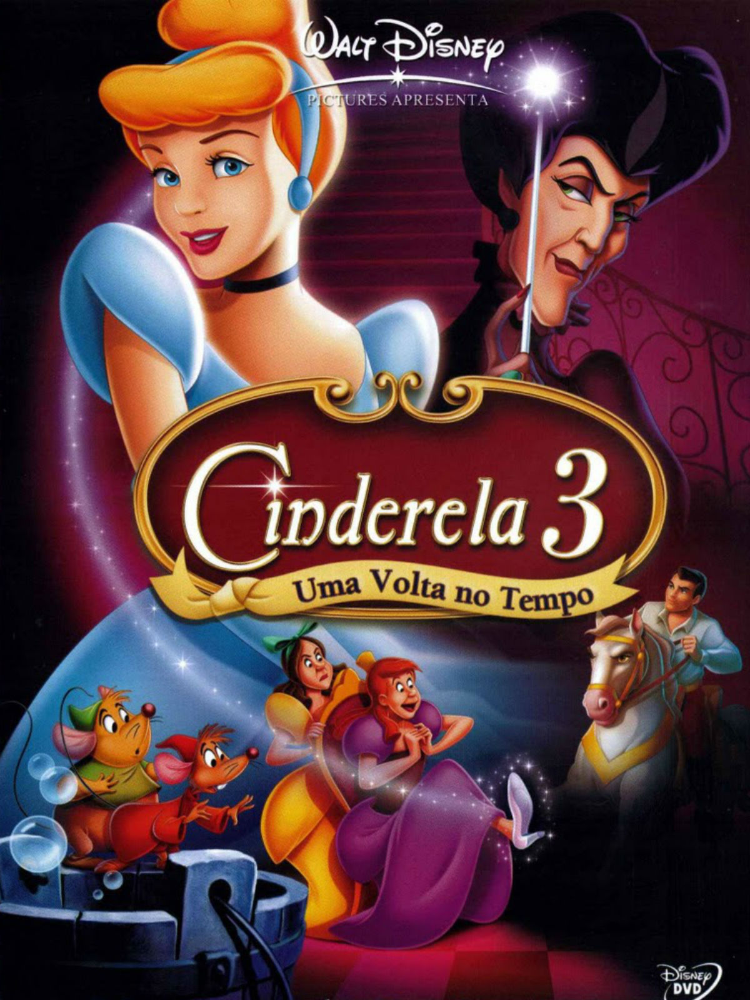
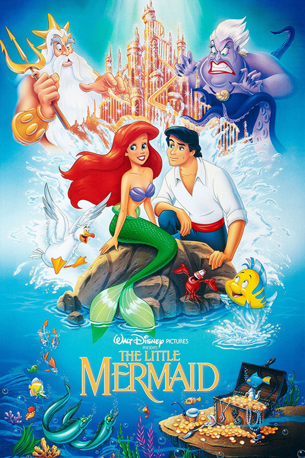

Toy Story | #300155
O aniversário de Andy está chegando e os brinquedos estão nervosos. Afinal de contas, eles temem que
um novo brinquedo possa substituí-los. Liderados por Woody, um caubói que é também o brinquedo
predileto de Andy, eles montam uma escuta que lhes permite saber dos presentes ganhos. Entre eles
está Buzz Lightyear, o boneco de um patrulheiro espacial, que logo passa a receber mais atenção do
garoto. Isto aos poucos gera ciúmes em Woody, que tenta fazer com que ele caia atrás da cama. Só que
o plano dá errado e Buzz cai pela janela. É o início da aventura de Woody, que precisa resgatar Buzz
também para limpar sua barra com os outros brinquedos.
Elenco Principal:
Alexandre Lippiani: Woody
Guilherme Briggs: Buzz Lightyear
Antônio Patiño: Senhor Cabeça de Batata
Renato Rosenberg: Porquinho
Marco Antônio Costa: Rex
Francisco José: Slink
Produtora: Walt Disney Animation Studios
Duração:1h17min
Indicação etária: Livre

Toy Story 2 | #300156
Em Toy Story 2, Woody (Tom Hanks) tenta salvar um brinquedo que acaba indo parar num bazar de usados e
termina por ser sequestrado por um colecionador de brinquedos, que pretende vendê-lo a um museu japonês.
Na casa do sequestrador, descobre que foi o protagonista de um famoso seriado da TV de décadas atrás e
conhece os demais integrantes de sua coleção. Enquanto isso, os demais brinquedos, liderador por Buzz
Lightyear (Tim Allen), partem numa atrapalhada operação de resgate.
Elenco Principal:
Marco Ribeiro: Woody
Guilherme Briggs: Buzz Lightyear
Antônio Patiño: Senhor Cabeça de Batata
Mabel Cezar: Jessie
Marco Antônio Costa: Rex
Fabíola Giardino: Barbie Guia Turística
Produtora:Walt Disney Animation Studios
Duração:1h33min
Indicação etária: Livre

Toy Story 3 | #300157
Em Toy Story 3, Andy tem 17 anos e está prestes a ir para a faculdade. Desta
forma, precisa arrumar o quarto e definir o que irá para o lixo e o que será guardado no sótão.
Seus antigos brinquedos, entre eles Buzz Lightyea, Jessie e o Sr.
Cabeça de Batata, são separados para serem guardados no sótão. Entretanto, uma
confusão faz com que a mãe de Andy os coloque no lixo. Woody, que será levado por
Andy para a faculdade, decide salvá-los. O grupo escapa, mas acaba no carro da mãe de Andy. Ela
leva a uma creche diversos brinquedos, entre eles Barbie. Ao chegarem, os amigos
encontram um universo até então inimaginável, onde os brinquedos sempre têm crianças para
brincarem com eles.
Elenco Principal:
Marco Ribeiro: Woody
Guilherme Briggs: Buzz Lightyear
Duda Ribeiro: Ken
Mabel Cezar: Jessie
Marco Antônio Costa: Lotso O ursinho Fofo
Fabíola Giardino: Barbie Guia Turística.
Produtora:Walt Disney Animation Studios
Duração:1h43min
Indicação etária: Livre

Toy Story 4 | #300158
Agora morando na casa da pequena Bonnie, Woody apresenta aos amigos o novo brinquedo construído por
ela: Forky, baseado em um garfo de verdade. O novo posto de brinquedo não o agrada nem um pouco, o
que faz com que Forky fuja de casa. Decidido a trazer de volta o atual brinquedo favorito de Bonnie,
Woody parte em seu encalço e, no caminho, reencontra Bo Peep, que agora vive em um parque de
diversões.
Elenco Principal:
Marco Ribeiro: Woody
Guilherme Briggs: Buzz Lightyear
Duda Espinoza: Garfinho
Perla Ficher: Bonnie Anderson
Telma da Costa: Betty
Marco Luque: Patinho
Antonio Tabet: Coelhinho
Produtora:Walt Disney Animation Studios
Duração:1h40min
Indicação etária: Livre

Era do gelo | #300159
O mamute Manny (Ray Romano/Diogo Vilela), o tigre de dente de sabre Diego (Dennis Leary/Márcio
Garcia) e a preguiça-gigante Sid (John Leguizamo/Tadeu Melo) são amigos em uma época muito
distante dos dias atuais e vivem suas vidas em meio a muito gelo. Até o dia em que eles
encontram um menino esquimó totalmente sozinho, longe de seus pais, e decidem que precisam
ajudá-lo a achar a sua família. Enquanto isso, o esquilo pré-histórico Scrat segue na sua saga
para manter sua amada noz protegida de outros predadores.
Elenco Principal:
Diogo Vilela: Manfred "Manny"
Márcio Garcia: Diego.
Tadeu Mello: Sid.
Andréa Suhet: Shira.
Nadia Carvalho: Vovó
Carla Pompílio: Ellie.
Gustavo Nader: Eddie.
Mauro Ramos: Flynn.
Produtora:Blue Sky Studios
Duração:1h21min
Indicação etária: Livre

Era do gelo 2 | #300160
A era glacial está chegando ao fim e como consequência surgem em todo lugar gêiseres e verdadeiros parques
aquáticos. O mamute Manfred (Ray Romano/Diogo Vilela), o tigre Diego (Dennis Leary/Márcio Garcia) e o
bicho-preguiça Sid (John Leguizamo/Tadeu Melo) logo descobrem que toneladas de gelo estão prestes a
derreter, o que inundaria o vale em que vivem. Logo, o trio de amigos precisa correr para avisar a todos do
perigo e ainda encontrar um local em que não corram riscos.
Elenco Principal:
Diogo Vilela: Manfred "Manny"
Márcio Garcia: Diego
Tadeu Mello: Sid
Gustavo Nader: Eddie
Peterson Adriano: Crash
Isaac Bardavid: Abutre
Carla Pompílio: Ellie
Lina Mendes: Priguiçinha Fêmea
Produtora:Blue Sky Studios
Duração:1h31min
Indicação etária: Livre

Era do gelo 3 | #300161
Manny (Ray Romano/Diogo Vilela) e Ellie (Queen Latifah/Cláudia Gimenez) estão à espera de seu
primeiro filho. Sid (John Leguizamo/Tadeu Melo) encontra alguns ovos de dinossauro, o que faz
com que passe a ter sua própria família adotiva. Só que o roubo faz com que se meta em apuros,
com a mãe tiranossauro vindo atrás de seus rebentos. Ela leva os três filhotes e ainda Sid para
um mundo subterrâneo, onde os dinossauros ainda existem, o que obriga Manny, Ellie e Diego
(Denis Leary/Márcio Garcia) a irem em sua busca para resgatá-lo.
Elenco Principal:
Diogo Vilela: Manfred "Manny"
Márcio Garcia: Diego
Tadeu Mello: Sid
Gustavo Nader: Eddie
Nizo Neto: Crash
Bill Hader: Gazela
Cláudia Jimenez: Ellie
Alexandre Moreno: Buck
Produtora:Blue Sky Studios
Duração:1h34min
Indicação etária: Livre

Era do gelo 4 | #300162
Sempre em busca de sua cobiçada noz, o esquilo Scrat provoca, sem querer, a separação dos continentes. A
situação provoca mudanças no terreno de vários locais, entre eles onde os amigos Manny (Ray Romano/Diego
Vilela), Diego (Denis Leary/Márcio Garcia) e Siid (John Leguizamo/Tadeu Mello) estão alojados. Um
terremoto faz com que o trio fique preso em um iceberg, enquanto que Ellie (Queen Latifah/Carla
Pompílio) e a pequena Amora (Keke Palmer/Bruna Laynes) permanecem no continente. Em alto mar, Manny
promete que irá encontrá-las a qualquer custo, mas para tanto precisará enfrentar perigosos piratas e o
canto das sereias.
Elenco Principal:
Diogo Vilela: Manfred "Manny"
Márcio Garcia: Diego.
Tadeu Mello: Sid.
Bruna Laynes: Amora.
Eduardo Borgerth: Shangri Llama
Carla Pompílio: Ellie.
Hélio Ribeiro: Pitágoras Buck.
Malta Junior: Robo Buck.
Produtora:Blue Sky Studios
Duração:1h28min
Indicação etária: Livre

Era do gelo: O Big Bang | #300163
Depois que o esquilo Scrat, involuntariamente, provoca um acidente espacial em sua incansável
perseguição pela noz, um enorme meteoro entra em rota de colisão com a Terra, ameaçando o lar de
Manny, Diego, Sid e cia. Sem saber o que fazer para reverter a situação, eles terão que confiar
em Buck, a elétrica doninha caolha do terceiro filme – único do grupo que realmente tem um plano
para evitar o trágico fim de todos. Paralelamente, Mannie e Ellie têm que lidar com iminente
saída de Amora de casa, ao passo que Diego e Shira pensam em aumentar a família e Sid finalmente
parece encontrar o amor.
Elenco Principal:
Diogo Vilela: Manfred "Manny"
Márcio Garcia: Diego.
Tadeu Mello: Sid.
Andréa Suhet: Shira.
Nadia Carvalho: Vovó
Carla Pompílio: Ellie.
Gustavo Nader: Eddie.
Mauro Ramos: Flynn.
Produtora:Blue Sky Studios
Duração:1h40min
Indicação etária: Livre

Enrolados | #300164
Flynn Ryder (Zachary Levi/Luciano Huck) é o bandido mais procurado e sedutor do reino. Um dia, em plena
fuga, ele se esconde em uma torre. Lá conhece Rapunzel (Mandy Moore), uma jovem prestes a completar 18
anos que tem um enorme cabelo dourado, de 21 metros de comprimento. Rapunzel deseja deixar seu
confinamento na torre para ver as luzes que sempre surgem no dia de seu aniversário. Para tanto, faz um
acordo com Flynn. Ele a ajuda a fugir e ela lhe devolve a valiosa tiara que tinha roubado. Só que a
mamãe Gothel (Donna Murphy), que manteve Rapunzel na torre durante toda a sua vida, não quer que ela
deixe o local de jeito nenhum.
Elenco Principal:
Sylvia Salustti: Rapunzel
Luciano Hulk: José Bezerra/Flynn Rider.
Gottsha: Mãe Gothel
Renato Rabello: Love horn
Brad Garrett: Gancho
Cláudio Alburquerque: Irmãos Stabbington
Gacia Júnior: Baixinho
Jorge Vasconcellos: Vladimir
Produtora:Walt Disney Animation Studios
Duração:1h40min
Indicação etária: Livres

Cinderela | #300165
Cinderela (Ilene Woods/ Simone de Morais) vive com sua madrasta, Lady Tremaine (Eleanor Audley/
Tina Vita), e as duas filhas dela. Obrigada a trabalhar como empregada da casa, ela tem como
amigos apenas os animais que a rodeiam. O local em que vive está agitado devido ao baile que
será realizado no castelo, o qual contará com a presença do príncipe (William Phipps/ Jorge
Goulart). Como Lady Tremaine pretende que uma das filhas se case com ele, elas se preparam com
requinte para o evento. Cinderela, entretanto, não pode ir. Até que surge a Fada-madrinha (Verna
Felton/ Maria Helena Pader), que dá a Cinderela um vestido e condições para que possa ir ao
baile em alto estilo. Entretanto há uma condição: Cinderela precisa retornar antes da
meia-noite, caso contrário o feitiço será desfeito.
Elenco Principal:
Simone de Moraes: Cinderela
Tina Vitta: Madrasta
Jimmy MacDonald: Tatá
Jorge Goulart: Principe Encantado
Ema D'Ávila: Anastácia
Suzy Kirbi: Drizella
José Vasconcellos: Rei

Cinderela 2 | #300166
Após se casar com o Príncipe Encantado, Cinderela vai morar no castelo e enfrenta a difícil missão de
ser a anfitriã do local, recebendo pessoas, escolhendo a decoração, os banquetes e mandando em criados.
Ela fica tão atarefada que não consegue dar atenção a seus amigos. Assim, o ratinho Jacques se sente
excluído e deseja se tornar humano. Depois, Cinderela reencontra Anastasia, uma de suas meias-irmãs, e a
ensina a sorrir para que ela encontre um amor verdadeiro.
Elenco Principal:
Fernanda Baronne: Cinderela
Nádia Carvalho: Madrasta
Manolo Rey: Tatá
Felipe Grinnan: Principe Encantado
Márcia Morelli: Anastácia
Christiane Monteiro: Drizella
Paulo Vignolo: Jaq
Produtora:Walt Disney Studios
Duração:1h15min
Indicação etária: Livre

Cinderela 3 | #300167
A malvada madrasta (Susan Blakeslee) consegue se apoderar da varinha mágica da fada-madrinha
(Russy Taylor), fazendo com que o tempo volte ao passado. Agora Cinderela (Jennifer Hale)
precisa mais uma vez encontrar o príncipe encantado (Christopher Daniel Barnes) e quebrar o novo
feitiço.
Elenco Principal:
Fernanda Baronne: Cinderela
Nádia Carvalho: Madrasta
Manolo Rey: Tatá
Felipe Grinnan: Principe Encantado
Márcia Morelli: Anastácia
Christiane Monteiro: Drizella
Paulo Vignolo: Jaq
Produtora:Walt Disney Animation Studios
Duração:1h19min
Indicação etária: Livre

A pequena sereia | #300168
Ariel é uma sereia princesa de dezesseis anos de idade insatisfeita com a vida no fundo do mar e curiosa
sobre o mundo na terra. Ela se apaixona por um príncipe humano e faz um acordo com a bruxa do mar para
transformar-se em humana.
Elenco Principal:
Marisa Leal: Ariel
Gárcia Júnior: Príncipe Eric
André filho: Sebastião
Zezé Motta: Úrsula
Patrick de Oliveira: Linguado
Luís Motta: Rei Tritão
Dario Lourenço: Grimsby
Produtora:Walt Disney Animation Studios
Duração:1h23min
Indicação etária: Livre

A Pequena Sereia II - O retorno para o mar | #300169
Ariel e o príncipe Eric agora estão casados e tem uma linda filha, Melody. Mas eles se deparam
com uma terrível ameaça: Morgana, a vingativa de irmã de Úrsula, que quer dominar o reino do
fundo do mar. Para proteger a filha, Ariel esconde de Melody seu passado como sereia e constrói
um muro em volta do castelo. Mas a inocente jovem sente uma forte atração pelo mundo do mar, o
que é um trunfo para os maléficos planos de Úrsula. Agora, Ariel vai contar com de seus amigos
Sebastião, Linguado e Sabidão para retomar a paz de sua família.
Elenco Principal:
Marisa Leal: Ariel
Gárcia Júnior: Príncipe Eric
Eduardo Amir: Sebastião
Larissa Cardoso: Melody
Robson Richers: Linguado
Pietro Mário: Rei Tritão
Mário Monjardim: Sabidão
Produtora: Walt Disney Animation Studios
Duração:1h15min
Indicação etária: Livre

A Pequena Sereia - A história de Ariel | #300170
Veja como começou a jornada de uma das princesas mais amadas da Disney: Ariel. Em um tempo onde, por ordens
do rei Tritão, pai de Ariel, a música era proibida no reino, a pequena sereia descobre um clube subterrâneo
secreto onde a música toca todas as noites. O chefe do local é Sebastião, braço direito de seu pai. Sem
entender o porquê dessa proibição, Ariel e suas irmãs passam a frequentar o clube e vivem uma paixão pela
música. Enquanto isso, a invejosa governanta Marina Del Rey descobre tudo e conta tudo para o rei, para
conquistar sua confiança e roubar o lugar de Sebastião. Com a ajuda de Linguado, seus amigos e suas irmãs,
Ariel vai enfrentar a fúria de seu pai para tentar trazer a magia da música de volta para o reino do mar.
Elenco Principal:
Marisa Leal: Ariel
Gárcia Júnior: Príncipe Eric
Eduardo Amir: Sebastião
Larissa Cardoso: Melody
Robson Richers: Linguado
Pietro Mário: Rei Tritão
Mário Monjardim: Sabidão
Produtora: Walt Disney Animation Studios
Duração:1h17min
Indicação etária: Livre